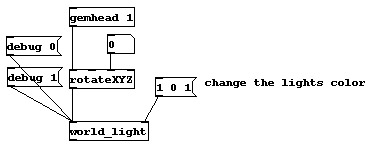
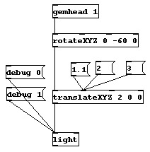

OpenGL uses a vertex lighting model. This means that for every vertex in the scene, the influence of the light is calculated. The color for the polygon is then modified by the light value of all of the vertices. This generally produces a very smooth effect, but you will occasionally run into rendering artifacts, especially if you use local lights. For example, imagine you have a local light close a large square. The corners of the square are far away from the light, so none of them will be lit very brightly, even though the light itself is very close to the surface of the square.
It is important to realize that lighting is an expensive operation to use. The number of polygons that you will be able to render will be much lower if lighting is turned on. As usual, the complexity of the scene and the speed of your computer and graphics card will greatly affect your frame rate.
GEM has only a maximum of 8 lights at one time. If you try to create more lights than that, you will get an error message.
Activate lighting
world_light - A directional light
light - A point light in the world
Moving lights

Individual lights can be turned on and off by sending a 1 or 0 to the left inlet of the light object itself.

The following patch is gem_lighting/gem1.world_light.pd.

The world_light has one extra inlet. The right inlet accepts three floats to set the color of the light. A color object would do nothing. In this case, the light is being set to purple. The world_light also accepts a debug message. The debug message turns on and off a graphical representation of the light in the scene. The world_light looks like a cone. The cone shows the direction that the light is coming from. Remember that the actual position of the light does not matter, so geos behind the cone will still be lit. It is the direction of the light that matters. This is why you can rotate the light.

Below is the patch gem_lighting/gem2.light.pd.

The light object has a right inlet for the color, just light the world_light object. As this patch shows, the light can be moved around the scene with both rotate and translate objects. If you were to set the translate X value equal to 1.0, then the sphere would not be lit at all. This is because the light would be inside of the sphere. When you turn on the debug representation, it is a sphere with its origin where the light it. The light object does not have any size. It exists as a point source.

The patch gem_lighting/gem4.moveSpheres.pd is an example which moves two spheres around the world. Turn on and off the individual lights for a demonstration of a local versus infinite light.
The patch gem_lighting/gem5.materials.pd uses the material objects to selectively control the color of the object. Notice that the diffuse object sets the "overall" color, while the specular objects sets the bright reflective area where the light directly shines.